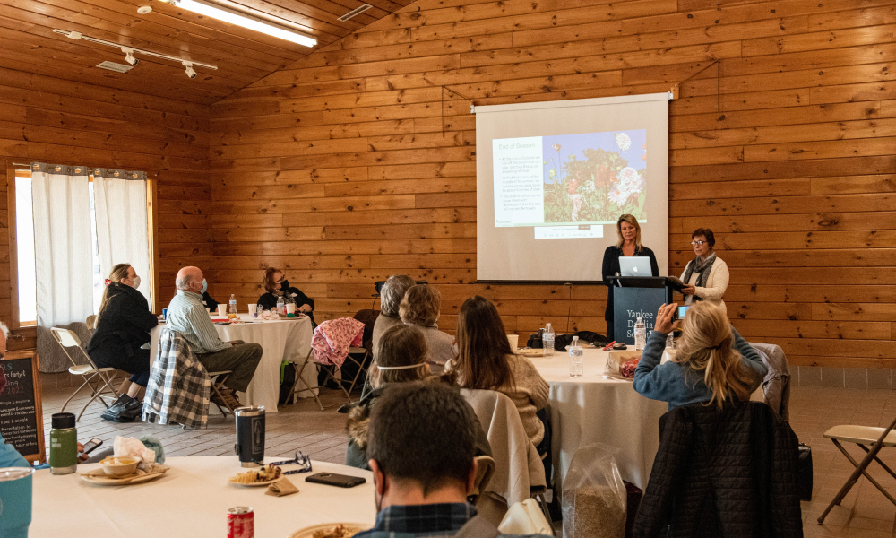

|
Hello dahlia friends!
We hope everyone enjoyed the holidays with
family and friends. As we welcome in 2023 we
want to wish all of you a very happy New Year.
We’re looking forward to a new year filled with
fun club programming and events. We have
wonderful guest presenters lined up for the
year, along with in person workshops, garden
tours and a Dahlia Bloom Exhibit in the fall.
Events you won’t want to miss. We’ll be
alternating between in person and Zoom meetings
so all our members from near and far can
participate and stay connected. Check out our
new Meetings page for details on our upcoming
events, bookmark the page to stay in the loop
and write the dates on your calendar to be sure
and join us.
If you haven’t already be sure to Save-The-Date
for Sunday, January 22nd. Looking forward to
seeing you at our 2nd Annual New Year
Celebration Potluck and Party! Last year we had
a great time at our New Year Party, with raffle
items, door prizes and of course our potluck
luncheon and lots of fun mingling. We are going
to do it again this month at Spence Farm on
Sunday, January 22 with our guest speaker Dr.
Panat Cherdchu. It’s a party not to miss as we
celebrate the New Year and the beginning of our
3rd year as a dahlia club!!!!
In 2022, our second year as a club, was a year
of many exciting firsts for YDS:
-
In January we held our first annual New Year
Celebration Potluck Party and raffle
-
Our first in person presentation in March
focused on propagating from seeds and
cuttings.
-
In May we had a blast at our very first ever
live tuber auction
-
May was also the month of our first public
tuber sale, held at
Massachusetts Horticultural Society - The
Garden at Elm Bank
-
October 1-2 we were excited to present our
first ever public Dahlia Bloom Exhibit
-
Dahlia-O-Rama, our first all day club tuber
dividing and labeling event in December was a
fun filled day with a wonderful crew of club
volunteers
As we look back on 2022 we are filled with pride
and gratitude to all of our members who
collectively showed up, pitched in, helped out,
supported the club and continue to make YDS what
it is: the very best dahlia club in the world.
– Misty & Carol
|
|
January 22nd Meeting
2nd Annual YDS New Year Celebration Party

Our 2022 New Year Celebration – Photo by
Misty Florez
Save the date for Sunday, January 22, 2023 from
11:00am-3:30pm. We will kick off the new year at
Spence Farm with a club party. We are
celebrating going into our 3rd growing season as
a dahlia club and ringing in 2023 with a
delicious pot luck luncheon, dahlia themed
raffle items to choose from as well as door
prizes and our special guest speaker, Dr. Panat
Cherdchu. For members that purchase from the
Y.D.S. tuber sale in January, this will be your
opportunity to come pick up your dahlia tuber
order.
Special Guest Presentation by Dr. Panat Cherdchu
 dr.panatsgardens
dr.panatsgardens
Yankee Dahlia Society is excited to host Dr.
Panat Cherdchu, a local New England dahlia
grower, avid gardener and a professional sensory
scientist. Dr. Cherdchu has an amazing
collection of 350 dahlia plants spanning 220
varieties that he grows in 16 raised beds in
Stamford, Connecticut. He will share with us
beautiful images of his garden and how he
maintains the hundreds of perennials and annuals
on his over 2500 square feet of garden space.
Not just an amazing dahlia grower but with an
impressive garden that spans from the very first
spring bloom to the last dahlia bloom you won’t
want to miss his slide show presentation and
details on his garden management. It is just the
thing that will get us all excited as we make
plans for our own gardens and the upcoming
growing season.
RSVP:
Please RSVP on SignUp Genius for more details
about our event! We look forward to celebrating
with you!
https://www.signupgenius.com/go/10C0C44AFA82DA5FAC16-2023
Door Prizes:
Everyone who attends will receive (1) ticket for
one of our three Y.D.S. Door Prizes. (No
purchase necessary.)
Opportunity Raffle Fundraiser:
Join the fun and festivities and be sure to buy
tickets for our fundraiser with a chance to win
dahlia themed items in our Opportunity Drawing!
We have a fun selection of items to drop your
tickets into and get a chance to win. Over
$500.00 in prizes!!!!
-
Dahlia Garden Kneeler & Bench with Basket
filled with supplies for the garden and
growing dahlias
-
Dahlia Hostess Tray by YDS Member Elizabeth
Hammond Pyle of
Bottle Branch
with Homemade Cookies
-
Hand Thrown Pottery Bowl by YDS Member Justin
Reis of
Justin Reis Ceramics
with Harmony Harvest Floral Frog
-
Dual Head LED Ott Light for dividing those
tubers and looking for eyes
- Beach Umbrella & Lawn Anchor
- Garden Tools Lumbar Pillow
-
The Joy of Dahlias by Linda van der Slot,
Katja Staring and Marlies Weijers
- Dahlia Tote Bag by Fern & Pebbles
-
Garden Apron by Practical Girl with Garden
Gloves
- Digging Fork
- {TBD} single tuber
- {TBD} single tuber
- {TBD} single tuber
Raffle Tickets:
- 2 for $5.00
- 5 for $10.00
- 10 for $20.00
Potluck Dish to Share or Bring Your Lunch:
We would love to celebrate the day and for those
that would like to bring a dish to share please
sign up for one of the following: Appetizers,
Salad, a Main Dish or Dessert. Anyone that would
like to bring their own personal food for the
day is welcome to do so.
*Bring a copy of your recipe to share.
Pick Up Your Tuber Order:
We will have your tuber order ready for pick up
at the party. Please let us know if you won’t be
able to make the party and arrange for another
day/time to pick up by emailing Misty or Carol
at info@yankeedahliasociety.com.
Events of the Day:
-
11:00-11:30 - Mingle, Coffee & Appetizers, Set
Up food table with everyone’s dish to share
-
11:30-11:45 - Welcome & Upcoming Events - Year
Overview
- 11:45-12:45 - Lunch & Mingle
-
12:45 - 1:45 - Presentation by Dr. Panat
Cherdchu and Q&A
-
2:00 - 2:30 - Opportunity Drawings & Door
Prizes
- 2:30 - 3:00 - Pick up Tuber Order
- 3:00 - 3:30 - Mingle
Setup & Breakdown:
For those that are able to lend a hand please
sign up via SignUp Genius. We could use some
help with Setup (45 mins early), Breakdown (90
mins after), Selling Raffle Tickets & Tuber
Order Distribution.
|
|
Member Spotlight
Kira Snyder

Photos by: Kira Snyder and Misty Florez
kira__sky
Hello! I'm Kira and I love plants. In my front
yard, I have a small vegetable and flower garden
where I grow my dahlias and a long, sunny border
loosely inspired by the designer Piet Oudolf. In
my backyard is a shade garden filled with spring
ephemerals and other plants that do well in dry
shade (like hellebores, epimediums, and
Solomon's seal). I love spending time in the
garden, especially weeding, which I find
meditative and satisfying.
I discovered dahlias about five years ago and
now can't imagine my garden without them. I'm
particularly drawn to shades of pink or peach
(like Crichton Honey and Bracken Sarah) and
smoky colors (like Brown Sugar or Mystique). I
tend to grow varieties that work well for flower
arranging, since I love making small
arrangements for myself or to give away to
friends and neighbors. I'm lucky enough to have
a collection of antique glass bottles from my
mother that I think look perfect with just one
or two stems in each. It brings me so much joy
to see them sitting on my windowsill or on my
desk!
I thought I'd share some of my favorite online
resources that have been of help to me over the
years:
I also highly recommend following flower farmers
and other growers on Instagram to get ideas of
what varieties you might want to add to your
garden. There's so much inspiration to be found.
|
|
Dahlia Tip
Watering Your Dahlias & Working Under Shade
By Carol Palmer and Misty Florez
Photos by Misty Florez
Keeping tabs on the temperature and humidity
conditions of our overwintering tubers can be a
challenge, especially as the weather gets below
freezing. A temperature and humidity monitor can
make it easy for you to always stay up to date
with the current temperature and humidity in
your tuber storage area. A small tabletop
monitor will display current temperature and
humidity if it’s easy to visually check it every
so often. A more convenient solution if your
storage area is not readily accessible is a
Bluetooth enabled thermometer and hygrometer all
in one unit that you can connect to your phone
with a free app. They are small enough to move
around easily and tuck them wherever you need
to, without having to keep them always in sight.
Use the app to check the temperature and
humidity of your storage any time right from
your phone, and set up notifications to alert
you if the temperature or humidity falls above
or below the ranges you set.These cool gadgets
are so convenient, and can save you a lot of
time and worry! We recommend at least the
two-pack to start with, and you can easily add
more if you need them.
|
|
Yankee Dahlia Society Club Store

Photos by Misty Florez
New this year, in addition to tubers our online
store now includes supplies available to
purchase. Our store features our favorite dahlia
growing supplies. Purchase online and pick up at
the next club meeting, have your order shipped
to you or coordinate with Carol and Misty to
arrange a custom pick up location.
In a separate email you should have received
your unique login and password to shop our
online store. All our supplies are available for
purchase now. Log in now to get familiar with
our online store, shop for books, tools, growing
supplies, and much more; plus you can preview
our tuber sale until the tuber sale goes live on
January 8 for Early Access members or on January
15 for all members.
We have worked hard to make our online store
look beautiful and work seamlessly to make your
shopping experience the best it can be. Thank
you to John for the hours behind the scenes as
our webmaster. Thank you for your support in
buying your tubers and supplies from the club.
Your purchases are greatly appreciated and
support YDS!
|
|
Bulk Soil Purchase
Photo by Misty Florez
It may be winter but we are getting ready for
spring and planting season. Potting up tubers
indoors mid-spring will give you a jump start on
the growing season.
This year we are excited to offer a Pre-Order of
ProMix potting soil. Great for starting your
dahlia tubers and for general all purpose
potting mix. Place your order now and we’ll have
it ready for you to pick up at the January 22nd
and March 5th meeting or at your convenience by
coordinating with Misty or Carol.
Email:
info@yankeedahliasociety.com
Subject:
I’d like to order ProMix
-
ProMix BX with Mycorrhizae and Biofungicide
(60 lb Compressed Bale)
$70.00/bale
-
ProMix BX with Mycorrhizae and Biofungicide
(2.8 cubic feet)
$35.00/bag
|
|
American Dahlia Society National Show in
Portland, Oregon
We have saved the dates on the calendar for the
American Dahlia Society National Show hosted by
the Portland Dahlia Society August 24 - 28,
2023. Check out Larry Smith’s YouTube video
sharing details about Portland and the Show
details. We are getting very excited. The Garden
tours are sure to be spectacular. It is going to
be a fantastic opportunity to meet experienced
dahlia growers on the West Coast and see all
their beautiful blooms brought to the show.
Carol and I will be there! It would be wonderful
to have you there too! Let us know if you plan
to attend.
|
|
Dahlia Forms
Incurved Cactus
Variety: Camano Concord
Photography by: Misty Florez
|
|
|
Upcoming Meetings & Events
See All Meetings
Sunday, January 22nd:
2nd Annual YDS New Year Celebration Party @
Spence Farm, Woburn MA
Saturday, February 4th:
Zoom meeting: The Hybridizing Process and
Dahlias From Seed with Trevor Hoff
Sunday, March 5th:
Hands On Seasonal Demonstration and Workshop @
Spence Farm, Woburn MA
|
|
|
|
|